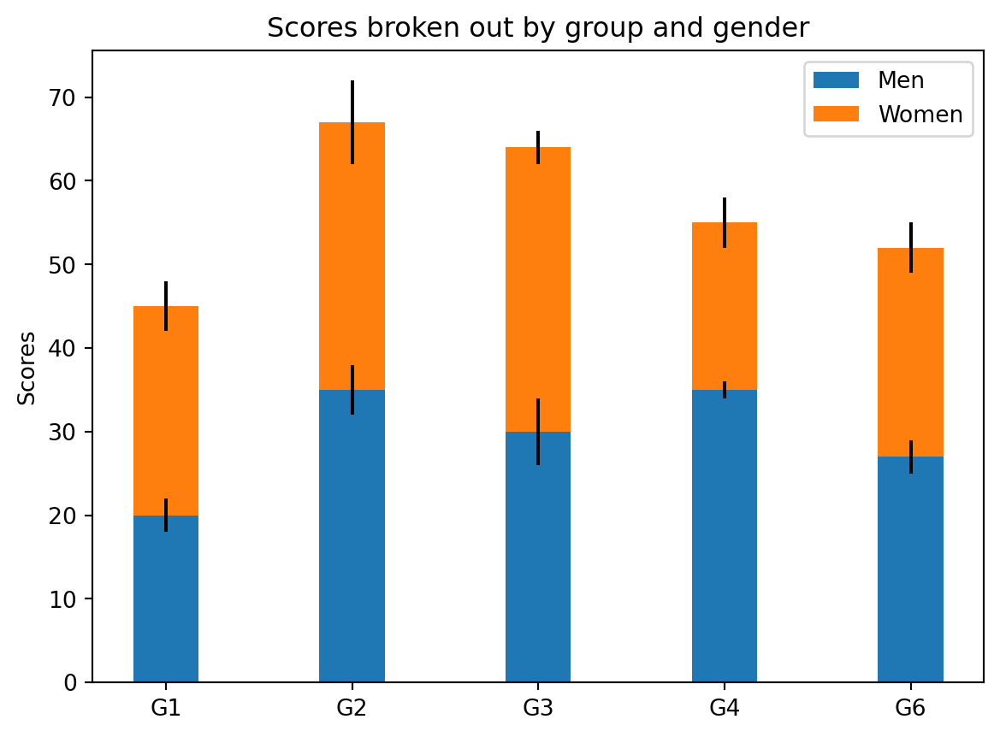

import pandas as pd
d = {'one' : [1., 2., 3., 4.],
'two' : [4., 3., 2., 1.]}
df = pd.DataFrame(d)
df| one | two | |
|---|---|---|
| 0 | 1.0 | 4.0 |
| 1 | 2.0 | 3.0 |
| 2 | 3.0 | 2.0 |
| 3 | 4.0 | 1.0 |
See the full guide on Using Python with Quarto and Jupyter Code Cells.
This is an Jupyter Markdown document. You can embed a Python code chunk like this:
import pandas as pd
d = {'one' : [1., 2., 3., 4.],
'two' : [4., 3., 2., 1.]}
df = pd.DataFrame(d)
df| one | two | |
|---|---|---|
| 0 | 1.0 | 4.0 |
| 1 | 2.0 | 3.0 |
| 2 | 3.0 | 2.0 |
| 3 | 4.0 | 1.0 |
You can also embed plots, for example:
import matplotlib.pyplot as plt
labels = ['G1', 'G2', 'G3', 'G4', 'G6']
men_means = [20, 35, 30, 35, 27]
women_means = [25, 32, 34, 20, 25]
men_std = [2, 3, 4, 1, 2]
women_std = [3, 5, 2, 3, 3]
width = 0.35 # the width of the bars: can also be len(x) sequence
fig, ax = plt.subplots()
ax.bar(labels, men_means, width, yerr=men_std, label='Men')
ax.bar(labels, women_means, width, yerr=women_std, bottom=men_means,
label='Women')
ax.set_ylabel('Scores')
ax.set_title('Scores broken out by group and gender')
ax.legend()
plt.show()
Note that the code-fold: true parameter was added to the code chunk to hide the code by default (click the “Code” above to see the code).
You can also embed interactive ipython widgets. For example:
from ipyleaflet import Map, Marker, basemaps, basemap_to_tiles
m = Map(
basemap=basemap_to_tiles(
basemaps.NASAGIBS.ModisTerraTrueColorCR, "2017-04-08"
),
center=(52.204793, 360.121558),
zoom=4
)
m.add_layer(Marker(location=(52.204793, 360.121558)))
mYou can also include LaTeX math:
P\left(A=2\middle|\frac{A^2}{B}>4\right)